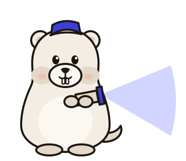

A private cinema, built from parts.
Tokens extend the approved brand kit (docs/brand/kit/tokens.css); nothing here contradicts it. Source: docs/design/system/gonema.css, organised as tokens → base → components → shell. Every component below is shown in all of its states; forced states use .is-hover, .is-active, .is-focus so they can be screenshotted.
Colour roles
Warm blacks and bone paper, one ultramarine accent. Ratios are computed live in this page against bg-base (composited for translucent values). Light is an equal citizen: the same roles, re-tuned.
Accent rule (brand): at most one solid accent element per view (the primary button). Elsewhere accent is for focus, selection and links. border is decorative only; controls use border-control (≥ 3:1, WCAG 1.4.11).
Status colours
Five library states, always carried by an icon and a label, never by colour alone. Badge = status text on a 14 % tint of itself. On posters the badge becomes a glass pill with a coloured icon, so it reads on any artwork.
On artwork
Movie tint
movies.dominant_color is extracted from the poster at import. CSS derives --movie-tint with relative colour syntax: keep the poster’s hue, clamp chroma (≤ 0.10 dark, ≤ 0.13 light) and pin lightness (OKLCH L 0.80 dark, 0.47 light). That guarantees ≥ 4.5:1 on bg-base for any input, verified below. The tint drives the movie page atmosphere, its primary action, rating rings and hairlines. Focus rings, links and statuses stay brand colours.
.movie-scope { --movie-tint: oklch(from var(--movie-dominant) 0.8 min(c, 0.1) h); } /* dark */
[data-theme="light"] .movie-scope { --movie-tint: oklch(from var(--movie-dominant) 0.47 min(c, 0.13) h); }
Typography
Archivo Expanded for titles, Geist for interface, Geist Mono for releases, paths, scores and sizes. Numbers that align use tabular figures. Film titles in title case.
Spacing, radius, density, layout
Spacing (4 px base)
Radius
Density
- Airy (default, browsing)
- poster ≥ 168 px · gap 24/32 · row 56 px
- Compact (tables, power use)
- poster ≥ 128 px · gap 16/20 · row 36 px
Layout grid
- Design width
- 1440 × 900, tablet 1024
- Sidebar
- 248 px · rail 72 px (≤ 1100 px or on demand)
- Top bar
- 64 px, glass level 1, sticky
- Gutter
- 32 px (24 px tablet)
- Content max
- 1600 px
- Controls
- 28 / 36 / 44 px
- Z layers
- sticky 10 · sidebar 20 · topbar 30 · bulk 40 · popover 50 · scrim 60 · dialog 70 · toast 80 · tooltip 90
Elevation and glass
Shadows are warm and soft; in dark they carry a 1 px top highlight instead of growing darker. Glass is reserved for things that float above content (top bar, bulk bar, menus, dialogs, toasts) and never stacks on glass. With prefers-reduced-transparency every glass layer becomes solid.
Motion tokens
Purposeful and short: 150–300 ms, ease-out for arrivals, springs for things you touch. Keyboard-initiated actions (palette, list navigation) do not animate. Press a row to play it. Full spec: docs/design/motion.md, live demos: motion/index.html.
Focus ring
2 px accent ring with a 2 px gap in the surface colour (--focus-ring), shown for keyboard focus only (:focus-visible). It never animates in, never disappears, and the movie tint never replaces it. Tab through this row.
Controls
Buttons
Icon buttons
Inputs and select
Toggle, checkbox, segmented, tabs
Chips and tags
Data display
Quality badge
Score pill
Tooltip
Progress (live)
Table row · airy and compact
Sidebar nav item

The house is dark.
Add a film and we’ll start the screening. Or import an existing folder; Gonema will match what it finds.
Inline notice
Menus, dialogs, toasts
Menus scale from their trigger (transform-origin), dialogs from centre. Destructive actions are optimistic with Undo when the action is reversible (unmonitor, remove from library, blocklist); a confirmation dialog only when files on disk would be deleted.
Poster card
The poster is the hero: 2:3, radius 12, soft depth. Chrome (select, quick actions, quality) appears on hover or keyboard focus. Only states that need attention sit on the artwork; the rest live in the meta line. Hover lift uses the gentle spring; selection scales to 0.97 with a 2 px accent ring.
Icons
Lucide v0.460.0 (ISC licence, © Lucide Contributors; portions © Cole Bemis, Feather, MIT), embedded inline as an SVG sprite (icons.js). One stroke for everything: 1.5 px at 18 px (1.75 in badges). Sizes 14 / 16 / 18 / 20 / 24. Icons are decorative (aria-hidden); the control carries the label.